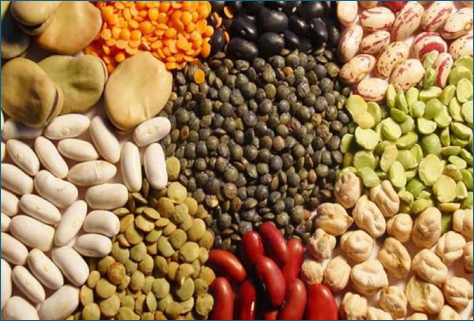

Olachea Group
03 Mar, 2026
Wholesale Venezuelan Beans & Pulses: The Export-Grade Protein Source U.S. Buyers Are Looking For
For food industry purchasing managers, importers, canners, and plant-based food manufacturers in the United States, the search for reliable, clean-label protein sources has never been more urgent. Global demand for dry beans and pulses is rising fast — and Venezuela is positioning itself as a competitive, high-quality origin capable of meeting the strictest U.S. buyer specifications.
Why Source Beans & Pulses from Venezuela?
Venezuela has a deep-rooted tradition of cultivating edible legumes — from the iconic black bean (caraota negra) to cowpeas and mung beans — in tropical and subtropical agro-ecological conditions that naturally favor high yields and excellent grain quality. A key agronomic advantage: legumes in the Fabaceae family fix atmospheric nitrogen through symbiosis with rhizobium bacteria, reducing reliance on synthetic fertilizers and contributing to more sustainable supply chains.
For U.S. companies with ESG commitments and low-impact sourcing requirements, this is a strategic differentiator — not just a commodity checkbox.
BEANS-&-PULSES-SUPPLY-olachea.webp
Add image filename here
Our Wholesale Bean & Pulse Portfolio
Our Venezuelan legume portfolio is designed to align with the full spectrum of U.S. demand — from retail canned products and foodservice soups to industrial processing and plant-based formulations. Each variety is export-ready with documented quality specifications.

1. Black Beans — Caraota Negra
The U.S. Market Staple
A cornerstone of Latin American cuisine and one of the most consumed dry beans in U.S. retail and foodservice. Ideal for canned goods, soups, chili, dry pack, and ready-to-eat meals.
- • Format: Dry bulk, canning grade
- • Applications: Canned goods, soups, chili, ethnic cuisines, ready meals
- • Moisture: ≤ 12%

2. Mung Beans — Vigna radiata
The Fast-Growing Export Star
One of Venezuela's most commercially relevant export crops. Mung beans drive strong demand across ethnic cuisines, sprouting markets, and plant-based protein formulations.
- • Color: Uniform green, max 10% off-size grains
- • Moisture: ≤ 12% | Damaged: max 5%
- • Applications: Sprouting, plant-based protein ingredients, Asian cuisine
- • Freedom from live/dead insects; low pesticide residues

3. Cowpeas — Pico Negro
Dual-Market: Dry Grain & Canning
A versatile pulse with proven demand in both the dry grain market and the canning industry. White-beige color, clean flavor profile, and reliable size uniformity.
- • Dry market: ~5.5 mm grain, uniform white-beige color, max 10% off-calibration
- • Canning market: ~4.5 mm grain, same rigorous standards
- • Moisture: ≤ 12% | No live/dead insects

4. Pigeon Peas — Quinchoncho
Regional Heritage, Global Appeal
Deeply embedded in Caribbean and South American food culture. Gaining traction in the U.S. market through Latin foodservice channels, ethnic retail, and plant-based innovation.
- • Applications: Traditional dishes, value-added plant-based foods, soups
- • Strong demand in Caribbean & Latin American communities across U.S.

5. Bayo & Colored Beans
Versatile Canning & Mixed-Pack Raw Material
Bayo beans and other colored varieties serve as reliable raw material for canning operations and mixed bean applications — ideal for processors diversifying their bean sourcing.
- • Applications: Canning, mixed bean packs, traditional dishes
- • Available in consistent lot sizes for industrial buyers
Quality Specifications for U.S. Buyers
Our production and post-harvest teams apply strict quality controls at every stage of the supply chain, from seed selection and field management to warehousing and shipping documentation. The result is product that consistently meets — or exceeds — U.S. import requirements.
Grain Quality Standards
- • Moisture content ≤ 12%
- • Max 5% damaged grains (mung beans)
- • Max 10% off-size/off-calibration grains
- • Freedom from live and dead insects
- • Low pesticide & herbicide residues (buyer-spec compliant)
- • Uniform color for each variety
Agronomic & Logistics Profile
- • Crop cycle: 90–120 days (flexible rotation)
- • Ideal soil pH 5.5–6.5, loam texture
- • Optimal growing temp: 18–26 °C
- • FOB & CIF terms to U.S. ports
- • Samples available on request
- • Documentation: Phytosanitary certificates, COA, CoO
A Growing U.S. Market — and the Right Origin to Meet It
The U.S. dry beans and pulses market is on a sustained growth trajectory. Health-conscious consumers, plant-based eating trends, and increasing ethnic diversity in American foodservice are driving demand for imported specialty beans. Dry beans remain the largest value segment in the pulse category — used across canned goods, soups, chili, ethnic dishes, and ready-to-eat meals at scale.
Within this landscape, origins like Venezuela — capable of supplying differentiated products such as mung beans and cowpeas at well-defined quality levels and competitive cost structures — are particularly well-positioned. For importers, packers, and canners seeking supply diversification beyond traditional origins, Venezuela offers a compelling combination of agronomic conditions, established legume culture, and growing export infrastructure.
Why U.S. Buyers Choose Venezuelan Pulses
Natural Nitrogen Fixation
Reduced synthetic input use — supports ESG-aligned supply chains
Consistent Grain Quality
Strict seed quality protocols across genetic, physiological, and sanitary dimensions
Crop Rotation Stability
Grown in rotation with maize and rice — supports yield predictability
Diverse Portfolio
Five bean varieties from one origin — simplify your supplier network
For U.S. companies focused on ESG metrics and supply-chain transparency, partnering with Venezuelan producers can help expand responsible sourcing options in the beans and pulses category — while meeting the strictest food safety and quality standards demanded by domestic processors and retailers.
— Olachea Group Export Team
Agronomic Excellence: From Seed to Shipment
Venezuelan producers targeting export markets apply a three-dimensional framework to seed quality that directly impacts the consistency your operations depend on:
Genetic
Variety selection for adaptation, yield potential, disease resistance, and correct grain type — size, color, shape
Physiological
Sufficient internal reserves and vigor to ensure uniform germination, plant establishment, and field performance
Sanitary
Lots selected and handled to minimize pathogen load — protecting appearance, storability, and phytosanitary status
Build Your 2026 Bean Supply Partnership
Importers, packers, canners, and plant-based food manufacturers seeking a reliable origin for mung beans, cowpeas, black beans, or other pulses can explore long-term supply agreements with Olachea Group — tailored to your exact quality protocols and volume requirements.
Ready to secure your 2026 pulse supply?
Contact our export team to discuss specifications, request samples, or get a wholesale quote for our Venezuelan legume portfolio.
Samples available on request for qualified buyers
Olachea Group
Premium Agricultural Exports — Since 1940
With over 80 years of experience in Venezuelan agriculture, Olachea Group specializes in delivering export-grade crops — including beans, pulses, corn, coffee, and cacao — to international markets. From field to shipment, our team ensures full traceability, rigorous quality control, and logistics support tailored to the U.S. food industry.